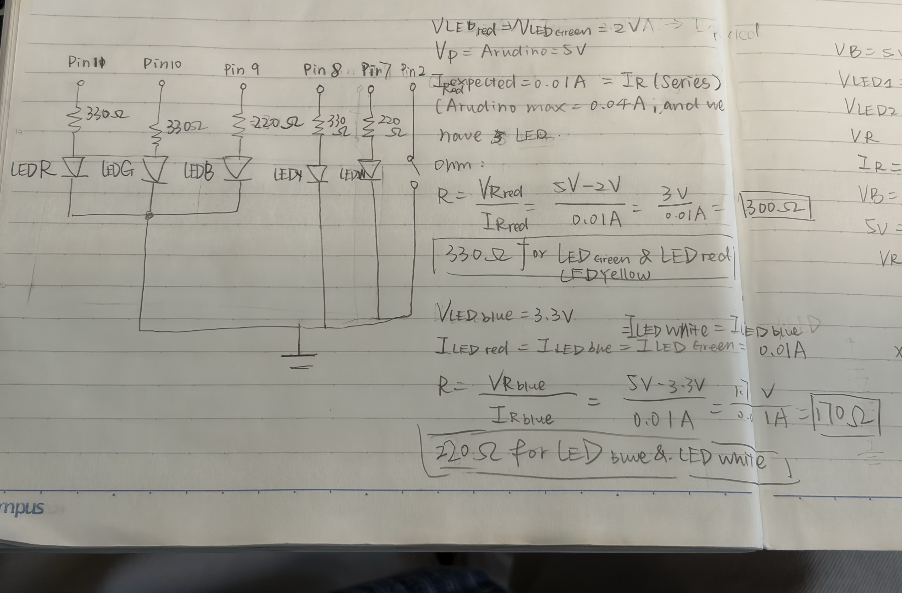
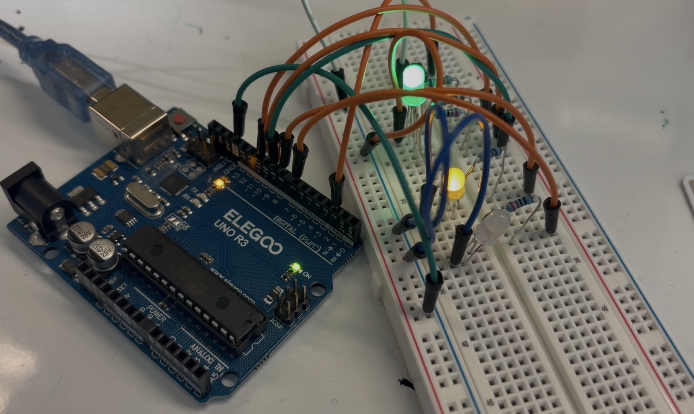
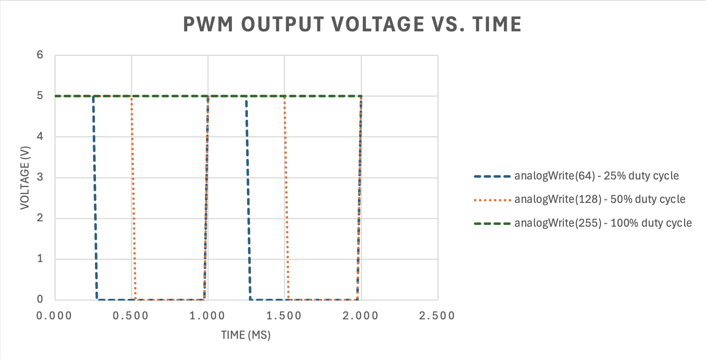

For this assignment, I designed and built an interactive light-up toy using an Arduino Uno, one RGB LED, two additional LEDs, a push button, resistors, and a breadboard. The RGB LED cycles through red, green, and blue, gradually fading in and out. The two additional LEDs create a flashing effect alongside the RGB LED. A push button allows the user to turn the light show on and off.
I created a schematic to plan the connections between the Arduino, LEDs, resistors, and button. Each LED channel has its own current-limiting resistor to prevent excessive current. The push button uses Arduino's internal pull-up resistor, so no external button resistor is needed.

I used Ohm's Law to calculate appropriate current-limiting resistors for the LEDs.
R = (Vsource - Vforward) / I
For the red LED, assuming a forward voltage of 2V and a target current of 10mA:
R = (5V - 2V) / 0.01A = 300Ω
For the blue LED, assuming a forward voltage of 3.3V and a target current of 10mA:
R = (5V - 3.3V) / 0.01A = 170Ω
I selected resistor values based on the available components and the expected current through each LED. The same method was used to evaluate the remaining LEDs.
I assembled the circuit on a breadboard using an Arduino Uno. The RGB LED uses three PWM output pins to control its brightness and color. The two additional LEDs provide extra lighting effects. All LED channels use resistors to limit current, and the circuit shares a common ground.

I modified Arduino's built-in Fade example to control multiple LEDs and respond to button input. The program uses analogWrite() to control RGB brightness, digitalRead() to detect button presses, digitalWrite() to switch LEDs on and off, and for loops to repeat the light sequences.
// Define RGB LED pins.
int redPin = 11;
int greenPin = 10;
int bluePin = 9;
// Define two new LED pins.
int led1 = 7;
int led2 = 8;
// Define button pin.
int buttonPin = 2;
// Track whether the light show is on.
bool lightOn = false;
// Remember the previous button state.
int lastButtonState = HIGH;
// Run setup once.
void setup() {
// Set RGB LED pins as outputs.
pinMode(redPin, OUTPUT);
pinMode(greenPin, OUTPUT);
pinMode(bluePin, OUTPUT);
// Set new LED pins as outputs.
pinMode(led1, OUTPUT);
pinMode(led2, OUTPUT);
// Use the internal pull-up resistor.
pinMode(buttonPin, INPUT_PULLUP);
}
// Repeat continuously.
void loop() {
// Check the button.
checkButton();
// Run the light show when enabled.
if (lightOn) {
// Fade each RGB color one by one.
for (int pin = 11; pin >= 9 && lightOn; pin--) {
// Turn on LED 1 and turn off LED 2.
digitalWrite(led1, HIGH);
digitalWrite(led2, LOW);
// Gradually increase brightness.
for (int brightness = 0; brightness <= 255 && lightOn; brightness += 5) {
// Set RGB brightness.
analogWrite(pin, brightness);
// Check for another button press.
checkButton();
// Wait 30 milliseconds.
delay(30);
}
// Turn off LED 1 and turn on LED 2.
digitalWrite(led1, LOW);
digitalWrite(led2, HIGH);
// Gradually decrease brightness.
for (int brightness = 255; brightness >= 0 && lightOn; brightness -= 5) {
// Set RGB brightness.
analogWrite(pin, brightness);
// Check for another button press.
checkButton();
// Wait 30 milliseconds.
delay(30);
}
// Turn off the current RGB color.
digitalWrite(pin, LOW);
}
}
// Turn off all LEDs when disabled.
if (!lightOn) {
// Turn off RGB channels.
digitalWrite(redPin, LOW);
digitalWrite(greenPin, LOW);
digitalWrite(bluePin, LOW);
// Turn off the two new LEDs.
digitalWrite(led1, LOW);
digitalWrite(led2, LOW);
}
}
// Check whether the button was newly pressed.
void checkButton() {
// Read the current button state.
int buttonState = digitalRead(buttonPin);
// Detect a new button press.
if (buttonState == LOW && lastButtonState == HIGH) {
// Toggle the light show.
lightOn = !lightOn;
// Wait briefly to reduce button bouncing.
delay(50);
}
// Remember the button state.
lastButtonState = digitalRead(buttonPin);
}
The final prototype creates an interactive light show. Pressing the button activates the lighting sequence, and pressing it again turns the lights off. The RGB LED gradually fades through different colors while the two additional LEDs create alternating lighting effects.
The analogWrite() function uses Pulse Width Modulation (PWM) to control the average power delivered to an LED. A value of 64 corresponds to approximately 25% duty cycle, 128 corresponds to approximately 50%, and 255 corresponds to 100%. The output rapidly switches between HIGH and LOW rather than producing a continuous analog voltage.

To calculate the maximum current draw, I used Ohm's Law to estimate the current through each of the five LED channels when they are all fully on.
RGB Red: (5V - 2V) / 330Ω = 9.09mA
RGB Green: (5V - 2V) / 330Ω = 9.09mA
RGB Blue: (5V - 3.3V) / 220Ω = 7.73mA
LED 4: (5V - 2V) / 220Ω = 13.64mA
LED 5: (5V - 2V) / 220Ω = 13.64mA
I_total = 9.09 + 9.09 + 7.73 + 13.64 + 13.64 = 53.19mA
Each LED channel draws less than the recommended 20mA per Arduino Uno output pin. The total LED current is below the ATmega328P's 200mA absolute maximum total current rating, although individual pin-group limits must also be considered.
Battery capacity = 1200mAh
Battery life = 1200mAh / 53.19mA = approximately 22.6 hours
This is a theoretical LED-only estimate assuming all five LED channels are fully on. Actual battery life depends on the Arduino's own power consumption, the LED fading patterns, battery voltage, and power conversion efficiency.
I used a multimeter to measure the voltage across the white LED while it was turned on. The measured forward voltage was 2.85V.
The theoretical forward voltage of a white LED is typically around 3.0V to 3.3V. I used 3.2V as the reference value.
Difference = 3.2V - 2.85V = 0.35V
The measured voltage was 0.35V lower than the reference value. This difference may be due to variations in the LED's characteristics, operating current, and temperature.
I used ChatGPT to help understand Arduino functions, calculate resistor values, and troubleshoot my circuit. During the process, I encountered issues with LED connections and power supply wiring. I tested individual components and revised the circuit until it worked. AI was helpful for explaining unfamiliar concepts and identifying possible issues, but I still needed to physically build, test, and verify the circuit.